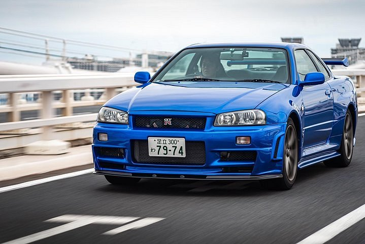
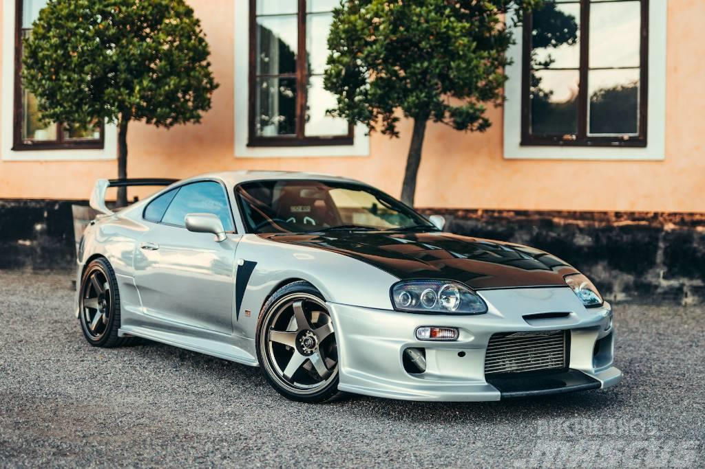
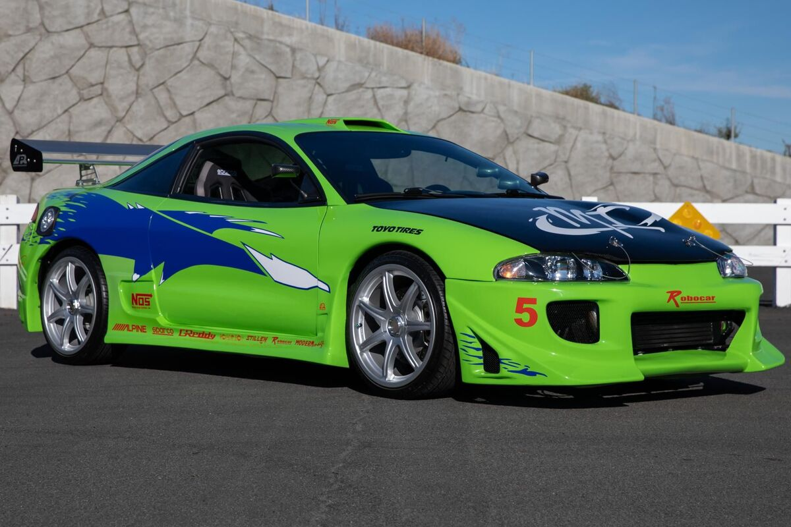

Skyline
O Skyline GT-R R34 (carro sigma) é uma versão esportiva de grande prestígio do Nissan Skyline. A versão GT-R possui o motor Nissan RB26DETT, de 6 cilindros em linha com biturbo. A sigla GT-R surgiu depois de uma vitória da Nissan em 1964 com o S54 2000 GT-B. Em 1973 o modelo GT-R deixou de ser produzido.
Supra
O Toyota Supra MK4 impressiona pela sua potência e desempenho. Seu motor é um 3.0 litros de seis cilindros em linha, com turbocompressor e injeção direta de combustível, proporcionando 326 cavalos de potência e 44 kgfm de torque.
Rx-7

Pesando apenas 1.280 kg, o Mazda RX-7 cumpria a aceleração de 0 a 100 km/h em apenas 5,3 segundos e atingia uma velocidade máxima de 250 km/h. Produzida até 2002, esta terceira geração foi, no entanto, gradualmente eliminada de muitos mercados europeus a partir de 1996 devido à regulamentação sobre emissões de CO2.
Eclipse
Construído no início de 1990 até o outono de 1995, o Mitsubishi Eclipse estava disponível com uma variedade de equipamentos e motores nos Estados Unidos. A versão mais simples teve o motor de 1.8 litros SOHC 4G37 (68 kW/92 cv), tração dianteira, sem limpador traseiro e janelas manuais.